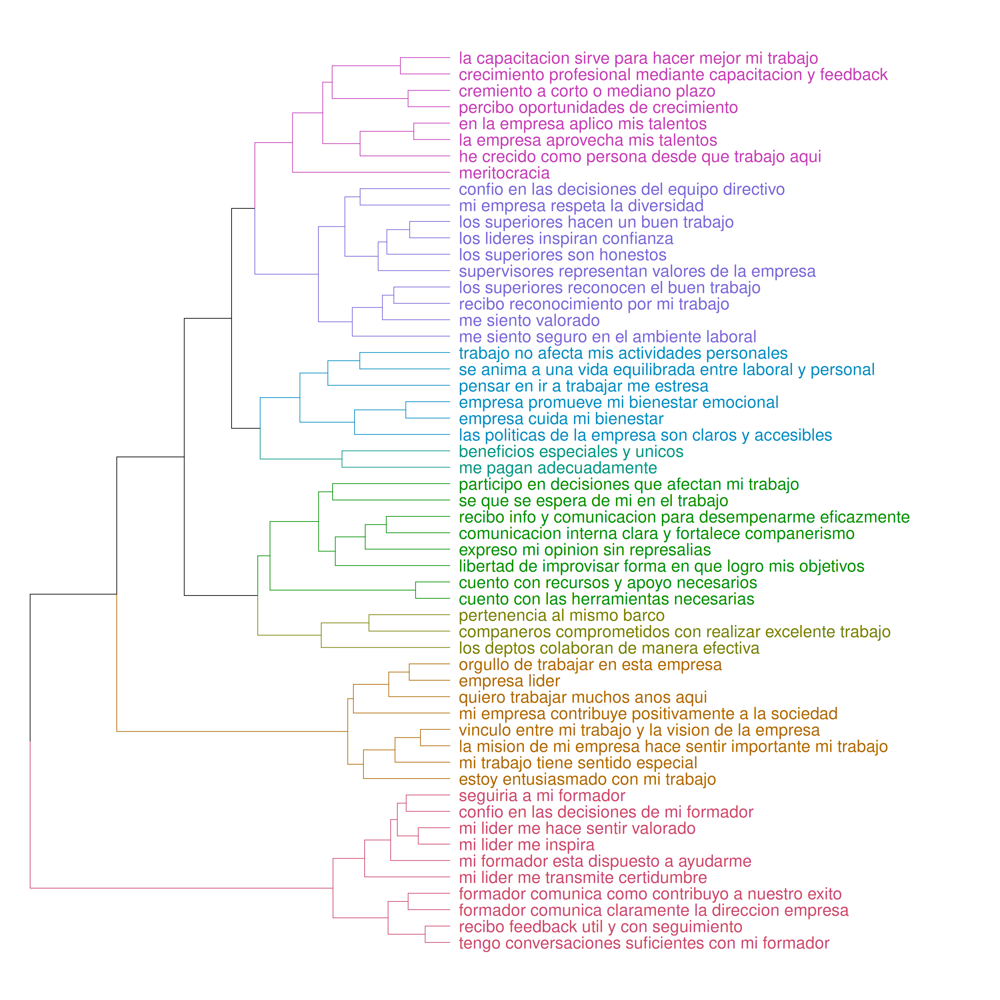
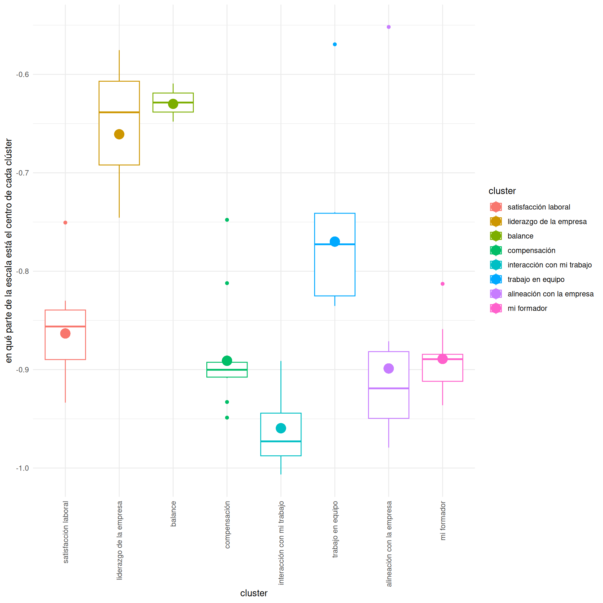

Felicidad v2
Objetivo
El propósito de este análisis fue auditar nuestra encuesta piloto de 56 preguntas para identificar cuáles son los indicadores críticos que realmente predicen la felicidad del colaborador. Se requiere de una herramienta ágil que elimine el “ruido” y se enfoque en lo que genera impacto real en el bienestar.
Metodología
Para asegurar que la encuesta sea precisa se sometieron los datos a dos metodologias:
CLustering : Este paso es indispensable para determinar las dimensiones principales y garantizar una buena representatividad de las mismas.
Poder de Diagnóstico: Evaluación de los diferentes items para determinar cuánta información aportan al índice y en qué parte de la escala hacen esta aportación.
Clustering
Dimensiones
La clusterización de las variables arroja 8 grandes grupos de variables:
Satisfacción laboral - Esta dimensión engloba la sensación que se tiene de “estar trabajando en el lugar correcto” y comprende 4 rubros principales
capacitación
crecimiento
utilidad
meritocracia
Liderazgo de la empresa - Comprende la percepción de el equipo directivo de la compañía, sus rubros principales son:
capacidad de los líderes
reconocimiento del buen trabajo
soy valorado
Balance - Es el impacto que tiene el trabajo en la vida de los colaboradores, tiebe como rubros:
impacto en mis actividades personales
impacto emocional
percepción de que la empresa se preocupa por los colaboradores
Compensación - Lo que recibo por mi trabajo, se compone por
compensación monetaria
beneficios adicionales
Interacción con mi trabajo - Es todo aquello que permite que los colaboradores puedan dar su input a la empresa, comprende:
participación del colaborador en proyectos y decisiones
herramientas e insumos necesarios para hacer el trabajo
comunicación clara sobre objetivos y lo que se espera del colaborador
Trabajo en equipo - Habla de la colaboración que se percibe en la oficina.
Alineación con la empresa - Los sentimientos que tiene el colaborador sobre la empresa, se resumen en:
Percepción de la empresa como líder
Los valores de la empresa se alinean con los míos
Quiero estar aquí mucho tiempo
Mi formador - Habla sobre todo aquello que está relacionado con el formador directo, los temas aquí son:
confianza en mi formador
capacidad de mi formador
comunicación con mi formador
La visualización queda como sigue:
Prioridad de las dimensiones
Es importante saber en que parte de la escala aporta información cada clúster, esto para conocer la prioridad que toman los diferentes elementos, por ejemplo, un clúster en la parte baja de la escala indica que es algo que se espera como necesidad básica, y algo en la parte superior es algo que quiero una vez que se han cumplido el resto de necesidades.
También es importante ver qué tan dispersa está dicha información, esto para saber si un clúster está muy focalizado o sí existen matices dentro del mismo.
En la siguiente gráfica cada cólor corresponde a un clúster.
el círculo grande corresponde a la media de información
los rectángulos contienen todos los puntoss desde el primer hasta el tercer cuantil.
la raya del centro es la mediana.
